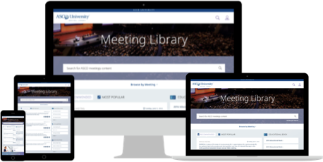

Meeting Library
Web App Redesign

The American Society of Clinical Oncology (ASCO) Meeting Library provides access to top scientific research on state-of-the-art treatment modalities, new therapies and ongoing controversies in the field of oncology. I helped the organization to design an improved user experience that streamlines access to this cutting-edge information in support of their vision of a world where cancer is prevented or cured, and every survivor is healthy.
User
Interviews
Stakeholder
Interviews
Wireflows
Wireframes
Usability
Testing
Oncology Practice Central
Website

Busy oncology practice professionals have no centralized, go-to resource to help them quickly and easily navigate complex regulations and administrative challenges. I worked with ASCO to address this problem by creating a new, reliable site that consolidates the information and tools needed to provide high-quality patient care and ensure continued payments from government and private insurers.
Open Card Sort Information Architecture Wireframes
National Council on Aging (NCOA)
Website Redesign

The National Council on Aging is on a mission to improve the lives of 10 million older adults by 2020. With that mission in mind, as part of the team at Reingold, a strategic Communications & Marketing firm, we created an updated responsive website with enhanced navigation that provides great information for professionals in aging, older adults, caregivers, and advocates.
User Interviews Stakeholder Interviews Personas Open Card Sort Information Architecture Wireframes